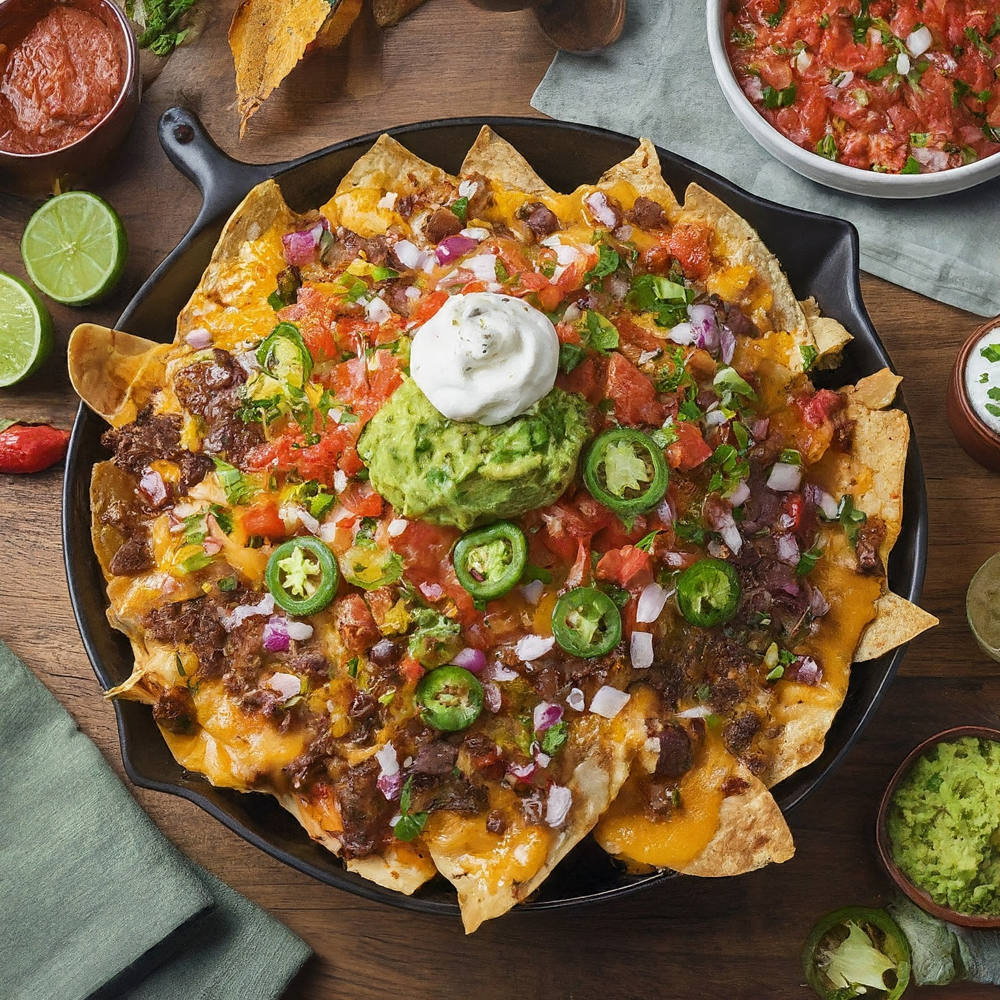

Fully Loaded Nachos
Ingredients:
Base:
1 large bag (around 12-16 oz) tortilla chips
Cheese:
1 cup (200g) shredded cheddar cheese
½ cup (100g) shredded Monterey Jack cheese (optional)
Protein (Optional):
½ pound ground beef, cooked and seasoned (taco seasoning or chili powder work well)
Shredded cooked chicken
Shredded pork
Toppings (Choose your favorites!):
Fresh: Diced tomatoes, chopped onions, sliced jalapenos, chopped cilantro, sliced avocado
Sauces: Salsa, sour cream, guacamole
Others: Refried beans, black olives, sliced bell peppers, crumbled queso fresco, chopped fresh herbs (like oregano)
Optional Extras:
Pickled jalapenos
Hot sauce
Instructions:
Preheat the Oven: Preheat your oven to 375°F (190°C).
Spread the Chips: Spread the tortilla chips evenly over a large baking sheet.
Cheese Time: Sprinkle the shredded cheese(s) over the chips. You can use a blend of cheeses for added flavor.
Protein Power (Optional): If using protein, layer it over the cheese.
Bake Until Melty: Bake the nachos for 8-10 minutes, or until the cheese is melted and bubbly.
Get Toppin'!: Remove the nachos from the oven and immediately top them with your desired toppings. Be generous!
Serve and Enjoy: Serve the fully loaded nachos hot, with all the toppings on the side or pre-added, depending on your preference. Let everyone customize their own plate!